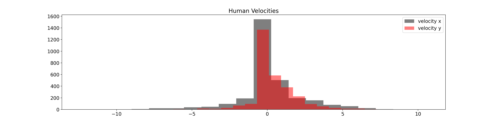
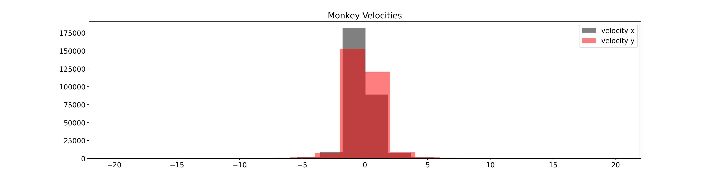

Note
Click here to download the full example code
Visualize distribution of velocities
The goal of this example is to show the distribution of velocities used to train the model and compare it with the distribution of the velocities while running the center out reach task.
Set data source
Retrieve the data from AWS S3
from urllib.parse import urljoin
import pooch
DOWNLOAD_BASE_URL = "https://neural-data-simulator.s3.amazonaws.com/sample_data/v1/"
MONKEY_DATA_PATH = pooch.retrieve(
url=urljoin(DOWNLOAD_BASE_URL, "monkey_velocities.npz"),
known_hash="md5:b1ef650106210d65da2a3075e7767a21",
)
HUMAN_DATA_PATH = pooch.retrieve(
url=urljoin(DOWNLOAD_BASE_URL, "human_velocities.npz"),
known_hash="md5:b2391f7759845f5256f651dc4e16fb6e",
)
Load data
Load the data to be plotted.
from matplotlib.pyplot import figure
import matplotlib.pyplot as plt
import numpy as np
monkey_file = np.load(MONKEY_DATA_PATH)
human_file = np.load(HUMAN_DATA_PATH)
monkey_data = monkey_file["arr_0"]
human_data = human_file["data"]
Scale monkey data
Monkey data has to be scaled in the same way it was done when training the model.
from sklearn.preprocessing import StandardScaler
VELOCITY_LIMIT = 20
scaler = StandardScaler()
scaler.fit(monkey_data)
monkey_data = scaler.transform(monkey_data)
monkey_data = np.clip(monkey_data, -VELOCITY_LIMIT, VELOCITY_LIMIT)
Plot data
plt.rcParams.update({"font.size": 14})
figure(figsize=(20, 5), dpi=180)
plt.hist(human_data[:, 0], color="black", bins=20, label="velocity x", alpha=0.5)
plt.hist(human_data[:, 1], color="red", bins=20, label="velocity y", alpha=0.5)
plt.legend()
plt.title("Human Velocities")
plt.show()
figure(figsize=(20, 5), dpi=180)
plt.hist(monkey_data[:, 0], color="black", bins=20, label="velocity x", alpha=0.5)
plt.hist(monkey_data[:, 1], color="red", bins=20, label="velocity y", alpha=0.5)
plt.legend()
plt.title("Monkey Velocities")
plt.show()
- 
- 
Total running time of the script: ( 0 minutes 1.961 seconds)